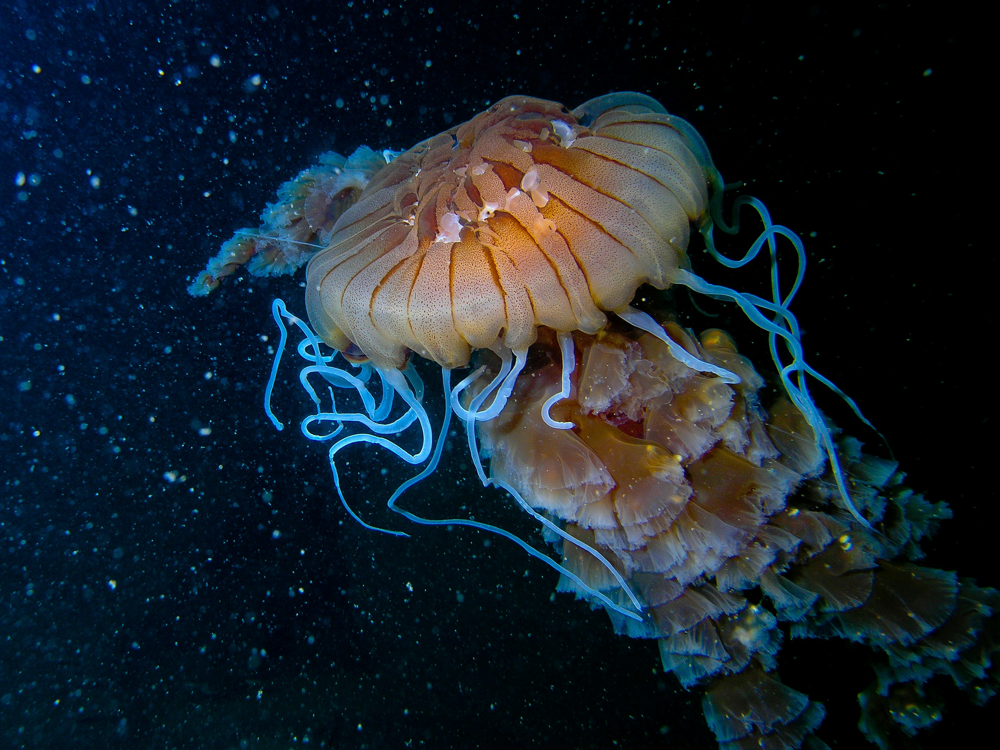

Eras geológicas de la tierra
Eón precambrico

Este eón cubre la mayor parte de la historia terrestre,
desde su formación hace unos 4.600 millones de años hasta
hace 541 millones de años. Se subdivide en:
Eras Arcaicas: Se inicia el origen de la vida.
Eras Proterozoicas: Se forman las primeras
grandes masas continentales y la atmósfera
se vuelve más rica en oxígeno.
Eón Paleozoico

Se observa la explosión de vida en los océanos, la colonización de la tierra por plantas y anfibios, la formación de grandes bosques de helechos y la aparición de los reptiles.
Eón mesozoico

Conocida como la era de los dinosaurios, con la fragmentación de Pangea, el surgimiento de los reptiles, la aparición de las aves y los primeros mamíferos. Culmina con una extinción masiva que eliminó a los dinosaurios.
Eón cenozoico

La era actual, marcada por la diversificación de los mamíferos y la evolución del ser humano.